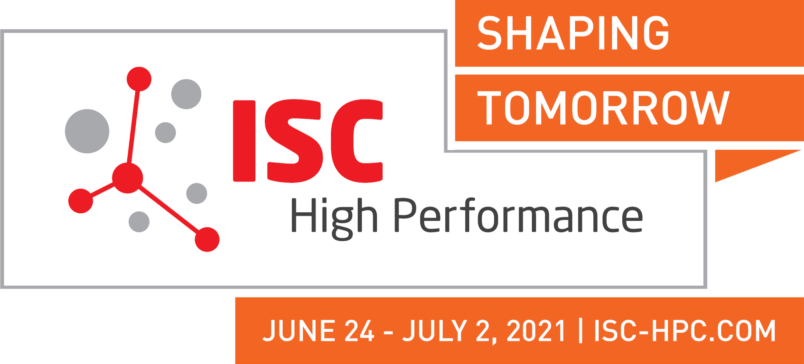

The 2nd International Workshop on Machine Learning Hardware is co-located digitally with ISC 2021. Pre-recorded presentations are made available here. A live Q/A session will happen on July 2nd 3pm UTC. Please scroll below for an overview of the workshop’s scope. (Link to first edition).
Presentations: Click here for Full Playlist
Live Q/A Session: July 2 3pm-4:30pm UTC.
A Live Q/A Session will be conducted for the ISC2021 audience to ask questions on the speaker’s presentations. The ISC2021 audience is encouraged to log on to the workshop’s slack channel and post their questions there ahead of the session. Questions will be curated and fed to participants during the live Q/A session.
Accelerating Deep Learning for Science with SambaNova
Prasanna Balaprakash, Computer Scientist, Argonne National Laboratory.
In a number of deep neural networks designed for scientific applications, we are faced with prohibitively large training time, memory capacity limitations, and bandwidth bottlenecks due to data size, model complexity, and uncertainty estimation. Recently, we have been exploring the use of the SambaNova AI accelerator to circumvent these limitations. In this talk, we will first give a high level overview of the scientific deep learning applications, their specific modalities, complexities, and unique computational needs. Next, we will present some preliminary results on porting and running the applications on SambaNova. Finally, we will discuss our future plans of using specialized AI accelerators for scientific deep learning applications.
Wafer-Scale Hardware for ML and Beyond
Rob Schreiber, Distinguished Engineer, Cerebras
Dennard scaling is over, and Moore’s Law is coming to an end. And with the rise of deep learning, and a host of beyond-exascale challenges in HPC, we need more performance.
Demand engenders supply, and ways to prolong the growth in supercomputing performance are at hand or on the horizon. Architectural specialization has returned, after a loss of system diversity in the Moore’s law era; it provides a significant boost for computational science. And at the hardware level, the development of a viable wafer-scale compute platform has important ramifications. Other long-term possibilities, notably quantum computing, may eventually play a role.
Wafer-scale integration was tried, and failed, at a well-funded 1990s startup. It has now been brought to customers, successfully, by Cerebras Systems. Why wafer-scale? Real achieved performance in supercomputers (as opposed to the peak speed) is limited by the bandwidth and latency barriers — memory and communication walls — that impose delay when off-processor-chip data is needed, and it is needed all the time. By changing the scale of the chip by two orders of magnitude, we can pack a small, powerful, mini-supercomputer on one piece of silicon, and eliminate much of the off-chip traffic for applications that can fit in the available memory. The elimination of most off-chip communication also cuts the power per unit performance, a key parameter when total system power is capped, as it usually is. I will provide some detail concerning the technical problems that had to be solved to make wafer-scale computing viable. Cerebras wafer-scale systems are in use at several labs today, and I will discuss the impact that they are having for traditional models, neural networks in science, and hybrids of AI and mathematical physics.
Machine Learning Benchmarks for Scientific Applications
Tony Hey, Chief Data Scientist, Science and Technology Facilities Council.
Benchmarking is a well-known topic in computer science and is primarily used for comparing the performance of both system software and hardware. With the rise in the use of AI technologies such as Deep Learning, it has become important to benchmark AI algorithms and AI-specialized hardware. This talk will describe our SciML-Bench project at the Lab which is focused on applications of Machine Learning applied to applications in a range of scientific domains. It is an open source and open data initiative covering scientific problems from materials science, earth sciences, the life sciences, particle physics, and astronomy. The benchmarks consist of a reference implementation, implemented in Python and using one or more of the common ML frameworks such as TensorFlow, PyTorch, or SciKit-Learn, together with a curated dataset that can be down-loaded. The talk will contain details of our latest results and a sketch of our plans for future development of the SciML benchmark suite.
Specialization in Hardware Architectures for Deep Learning
Michaela Blott, Distinguished Engineer, Xilinx.
Neural Networks are playing a key role in an ever-increasing range of applications, including machine vision, speech recognition and recommender systems, however their computational complexity and memory demands are challenging which limits their deployment. To address these challenges, a broad spectrum of increasingly customized and heterogeneous hardware architectures has emerged. During this talk, we will discuss various forms of specializations that have been leveraged by the industry with their impact on potential applications, flexibility, performance and efficiency. We apply these specializations on the example of a network intrusion detection system and quantify their impact on figures of merit such as throughput and latency. Finally, we will discuss how the specialization in hardware architectures can be automated through end-to-end tool flows.
Case studies on accelerating scientific computing applications with TPUs
Tianjian Lu, Software Engineer, Google Research.
Tensor Processing Units (TPU) is an application-specific integrated circuit (ASIC) to run cutting-edge machine learning models on Google Cloud. This work presents case studies on accelerating scientific computing applications on TPUs. The case studies include the distributed discrete Fourier transform, fast Fourier transform (FFT), nonuniform FFT (NUFFT), and spherical harmonics transform on TPUs, all targeting large-scale problems. We also apply the distributed Fourier transform on TPUs in medical imaging.
Highly Scalable Machine Learning Methods on Sunway TaihuLight
Haohuan Fu, Professor, Tsinghua University.
The Sunway TaihuLight supercomputer is the world’s first system with a peak performance greater than 100 PFlops, and a parallel scale of over 10 million cores. Different from other existing heterogeneous supercomputers, the system adopts its unique design strategies in both the architecture of its 260-core Shenwei CPU and its way of integrating 40,960 such CPUs as 40 powerful cabinets. Based on such a system design, we have developed a series of highly-scalalbe machine learning methods, such as deep convolutional networks, k-means, etc., which help to bridge to computing power to a number of data analysis problems in the earth science domain.
ABCI 2.0: opportunities and challenges of an open research platform for AI/ML workloads
Takano Ryousei, Senior Researcher, National Institute of Advanced Industrial Science and Technology.
ABCI is a large-scale open AI computing infrastructure for advancing AI research and deployment, operated by National Institute of Advanced Industrial Science and Technology (AIST) since 2018. It is now upgraded to be equipped with the 960 NVIDIA A100 GPUs. The theoretical peak performance reaches 226.0 petaflops for single precision and 851.5 petaflops for half precision, which is 1.5 to 3 times faster than the existing ABCI system. We introduce the system overview including AI/ML benchmark results, and ongoing research activities related to large-scale deep learning training techniques and massively parallel scientific workloads.
Recent years have seen a surge of interest and R&D efforts in AI chips worldwide. Those accelerators are typically designed for industrial applications, as opposed to scientific workloads. The use of machine learning (ML) accelerates in the HPC field itself, and there is concern that the scientific community should influence this ecosystem.
Indeed, scientific computing has an uncommon set of requirements regarding usage and administration, and how those chips and their software offerings answer those demands will shape the future of their integration within the global scientific computing infrastructure.
The previous iteration of this workshop focused on studying several points in the design space for those chips, through the participation of select AI accelerator companies. Several of such companies have since then started collaborating with organizations that look to expand HPC platforms. In this iteration of the workshop, we will focus on the following aspects:
Pete Beckman, Argonne National Laboratory - beckman@mcs.anl.gov
Swann Perarnau, Argonne National Laboratory - swann@anl.gov
Rosa M.Badia, Barcelona Supercomputing Center
Kentaro Sano, RIKEN
Valentin Reis, Groq, Inc - vreis@groq.com